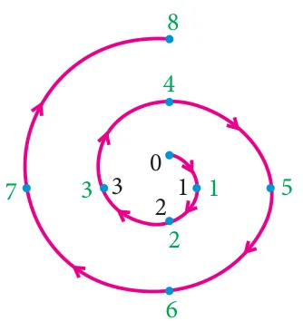
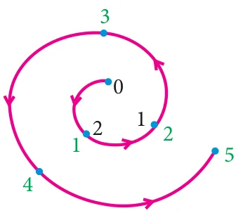

In a clock, we use the numbers 1 to 12 to represent the time period of 24 hours. How is it possible to represent the 24 hours of a day in a 12 number format? We use 1, 2, 3, 4, 5, 6, 7, 8, 9, 10, 11, 12 and after 12, we use 1 instead of 13 and 2 instead of 14 and so on. That is after 12 we again start from 1, 2, 3,… In this system the numbers wrap around 1 to 12. This type of wrapping around after hitting some value is called Modular Arithmetic.
In Mathematics, modular arithmetic is a system of arithmetic for integers where numbers wrap around a certain value. Unlike normal arithmetic, Modular Arithmetic process cyclically. The ideas of Modular arithmetic was developed by great German mathematician Carl Friedrich Gauss, who is hailed as the “Prince of mathematicians”.
Examples
- The day and night change repeatedly.
- The days of a week occur cyclically from Sunday to Saturday.
- The life cycle of a plant.
- The seasons of a year change cyclically. (Summer, Autumn, Winter, Spring)
- The railway and aeroplane timings also work cyclically. The railway time starts at 00:00 and continue. After reaching 23:59, the next minute will become 00:00 instead of 24:00.
2.5.1 Congruence Modulo
Two integers \(a\) and \(b\) are congruence modulo \(n\) if they differ by an integer multiple of \(n\). That \(a - b = kn\) for some integer \(k\). This can also be written as \(a \equiv b \pmod{n}\).
Here the number \(n\) is called modulus. In other words, \(a \equiv b \pmod{n}\) means \(a - b\) is divisible by \(n\).
For example, \(61 \equiv 5 \pmod{7}\) because \(61 - 5 = 56\) is divisible by 7.
Note
- When a positive integer is divided by \(n\), then the possible remainders are \(0, 1, 2, \ldots, n-1\).
- Thus, when we work with modulo \(n\), we replace all the numbers by their remainders upon division by \(n\), given by \(0, 1, 2, 3, \ldots, n-1\).
Two illustrations are provided to understand modulo concept more clearly.
Illustration 1

To find \(8 \pmod{4}\)
With a modulus of 4 (since the possible remainders are 0, 1, 2, 3) we make a diagram like a clock with numbers 0, 1, 2, 3. We start at 0 and go through 8 numbers in a clockwise sequence 1, 2, 3, 0, 1, 2, 3, 0. After doing so cyclically, we end at 0.
Therefore, \(8 \equiv 0 \pmod{4}\)
Illustration 2

To find \(-5 \pmod{3}\)
With a modulus of 3 (since the possible remainders are 0, 1, 2) we make a diagram like a clock with numbers 0, 1, 2.
We start at 0 and go through 5 numbers in anti-clockwise sequence 2, 1, 0, 2, 1. After doing so cyclically, we end at 1.
Therefore, \(-5 \equiv 1 \pmod{3}\)
2.5.2 Connecting Euclid’s Division lemma and Modular Arithmetic
Let \(m\) and \(n\) be integers, where \(m\) is positive. Then by Euclid’s division lemma, we can write \(n = mq + r\) where \(0 \le r < m\) and \(q\) is an integer. Instead of writing \(n = mq + r\) we can use the congruence notation in the following way.
We say that \(n\) is congruent to \(r\) modulo \(m\), if \(n = mq + r\) for some integer \(q\).
\(\begin{aligned} n &= mq + r \\ n - r &= mq \\ n - r &\equiv 0 \pmod{m} \\ n &\equiv r \pmod{m} \end{aligned}\)
Thus the equation \(n = mq + r\) through Euclid’s Division lemma can also be written as \(n \equiv r \pmod{m}\).
Progress Check
- Two integers \(a\) and \(b\) are congruent modulo \(n\) if \(\underline{\qquad\qquad}\).
- The set of all positive integers which leave remainder 5 when divided by 7 are \(\underline{\qquad\qquad}\).
Note
Two integers \(a\) and \(b\) are congruent modulo \(m\), written as \(a \equiv b \pmod{m}\), if they leave the same remainder when divided by \(m\).
Thinking Corner
How many integers exist which leave a remainder of 2 when divided by 3?
2.5.3 Modulo operations
Similar to basic arithmetic operations like addition, subtraction and multiplication performed on numbers we can think of performing same operations in modulo arithmetic. The following theorem provides the information of doing this.
Theorem 5
\(a\), \(b\), \(c\) and \(d\) are integers and \(m\) is a positive integer such that if \(a \equiv b \pmod{m}\) and \(c \equiv d \pmod{m}\) then
- \((a + c) \equiv (b + d) \pmod{m}\)
- \((a - c) \equiv (b - d) \pmod{m}\)
- \((a \times c) \equiv (b \times d) \pmod{m}\)
Illustration 3
If \(17 \equiv 4 \pmod{13}\) and \(42 \equiv 3 \pmod{13}\) then from theorem 5,
\(\begin{aligned} 17 + 42 &\equiv 4 + 3 \pmod{13} \\ 59 &\equiv 7 \pmod{13} \end{aligned}\)
\(\begin{aligned} 17 - 42 &\equiv 4 - 3 \pmod{13} \\ -25 &\equiv 1 \pmod{13} \end{aligned}\)
\(\begin{aligned} 17 \times 42 &\equiv 4 \times 3 \pmod{13} \\ 714 &\equiv 12 \pmod{13} \end{aligned}\)
Theorem 6
If \(a \equiv b \pmod{m}\) then
- \(ac \equiv bc \pmod{m}\)
- \(a \pm c \equiv b \pm c \pmod{m}\) for any integer \(c\)
Progress Check
- The positive values of \(k\) such that \((k - 3) \equiv 5 \pmod{11}\) are \(\underline{\qquad\qquad}\).
- If \(59 \equiv 3 \pmod{7}\), \(46 \equiv 4 \pmod{7}\) then \(105 \equiv \underline{\qquad} \pmod{7}\), \(13 \equiv \underline{\qquad} \pmod{7}\), \(413 \equiv \underline{\qquad} \pmod{7}\), \(368 \equiv \underline{\qquad} \pmod{7}\).
- The remainder when \(7 \times 13 \times 19 \times 23 \times 29 \times 31\) is divided by 6 is \(\underline{\qquad\qquad}\).
Example 2.11
Find the remainders when 70004 and 778 is divided by 7.
Solution
Since 70000 is divisible by 7
\(\begin{aligned} 70000 &\equiv 0 \pmod{7} \\ 70000 + 4 &\equiv 0 + 4 \pmod{7} \\ 70004 &\equiv 4 \pmod{7} \end{aligned}\)
Therefore, the remainder when 70004 is divided by 7 is 4.
\(\because\) 777 is divisible by 7
\(\begin{aligned} 777 &\equiv 0 \pmod{7} \\ 777 + 1 &\equiv 0 + 1 \pmod{7} \\ 778 &\equiv 1 \pmod{7} \end{aligned}\)
Therefore, the remainder when 778 is divided by 7 is 1.
Example 2.12
Determine the value of \(d\) such that \(15 \equiv 3 \pmod{d}\).
Solution
\(15 \equiv 3 \pmod{d}\) means \(15 - 3 = kd\), for some integer \(k\).
\(12 = kd.\)
\(\Rightarrow\ d\) divides 12.
The divisors of 12 are 1, 2, 3, 4, 6, 12. But \(d\) should be larger than 3 and so the possible values for \(d\) are 4, 6, 12.
Example 2.13
Find the least positive value of \(x\) such that
(i) \(67 + x \equiv 1 \pmod{4}\) (ii) \(98 \equiv (x + 4) \pmod{5}\)
Solution
\(\begin{aligned} 67 + x &\equiv 1 \pmod{4} \\ 67 + x - 1 &= 4n, \text{ for some integer } n \\ 66 + x &= 4n \end{aligned}\)
\(66 + x\) is a multiple of 4.
Therefore, the least positive value of \(x\) must be 2, since 68 is the nearest multiple of 4 more than 66.
\(\begin{aligned} 98 &\equiv (x + 4) \pmod{5} \\ 98 - (x + 4) &= 5n, \text{ for some integer } n. \\ 94 - x &= 5n \end{aligned}\)
\(94 - x\) is a multiple of 5.
Therefore, the least positive value of \(x\) must be 4
\(\because 94 - 4 = 90\) is the nearest multiple of 5 less than 94.
Note
While solving congruent equations, we get infinitely many solutions compared to finite number of solutions in solving a polynomial equation in Algebra.
Example 2.14
Solve \(8x \equiv 1 \pmod{11}\)
Solution
\(8x \equiv 1 \pmod{11}\) can be written as \(8x - 1 = 11k\), for some integer \(k\).
\(x = \dfrac{11k + 1}{8}\)
When we put \(k = 5, 13, 21, 29, \ldots\) then \(11k + 1\) is divisible by 8.
\(x = \dfrac{11 \times 5 + 1}{8} = 7\)
\(x = \dfrac{11 \times 13 + 1}{8} = 18\)
\(\therefore\) The solutions are \(7, 18, 29, 40, \ldots\)
Example 2.15
Compute \(x\), such that \(10^4 \equiv x \pmod{19}\)
Solution
\(10^2 = 100 \equiv 5 \pmod{19}\)
\(10^4 = (10^2)^2 \equiv 5^2 \pmod{19}\)
\(10^4 \equiv 25 \pmod{19}\)
\(10^4 \equiv 6 \pmod{19} \qquad (\because 25 \equiv 6 \pmod{19})\)
\(\therefore x = 6.\)
Example 2.16
Find the number of integer solutions of \(3x \equiv 1 \pmod{15}\).
Solution
\(3x \equiv 1 \pmod{15}\) can be written as
\(3x - 1 = 15k\) for some integer \(k\)
\(3x = 15k + 1\)
\(x = \dfrac{15k + 1}{3}\)
\(x = 5k + \dfrac{1}{3}\)
\(\because 5k\) is an integer, \(5k + \dfrac{1}{3}\) cannot be an integer.
So there is no integer solution.
Example 2.17
A man starts his journey from Chennai to Delhi by train. He starts at 22.30 hours on Wednesday. If it takes 32 hours of travelling time and assuming that the train is not late, when will he reach Delhi?
Solution
Starting time 22.30, Travelling time 32 hours. Here we use modulo 24.
The reaching time is
\(\begin{aligned} 22.30 + 32 \pmod{24} &\equiv 54.30 \pmod{24} \\ &\equiv 6.30 \pmod{24} \quad \Big(\because 32 = \underbrace{(1 \times 24)}_{\text{Thursday}} + \underbrace{8}_{\text{Friday}}\Big) \end{aligned}\)
Thus, he will reach Delhi on Friday at 6.30 hours.
Example 2.18
Kala and Vani are friends. Kala says, “Today is my birthday” and she asks Vani, “When will you celebrate your birthday?” Vani replies, “Today is Monday and I celebrated my birthday 75 days ago”. Find the day when Vani celebrated her birthday.
Solution
Let us associate the numbers 0, 1, 2, 3, 4, 5, 6 to represent the weekdays from Sunday to Saturday respectively.
Vani says today is Monday. So the number for Monday is 1. Since Vani’s birthday was 75 days ago, we have to subtract 75 from 1 and take the modulo 7, since a week contain 7 days.
\(-74 \pmod{7} \equiv -4 \pmod{7} \equiv 7 - 4 \pmod{7} \equiv 3 \pmod{7}\)
\((\because -74 - 3 = -77 \text{ is divisible by } 7)\)
Thus, \(1 - 75 \equiv 3 \pmod{7}\)
The day for the number 3 is Wednesday.
Therefore, Vani’s birthday must be on Wednesday.